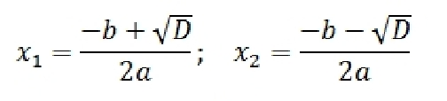

Решение квадратных уравнений
Пусть дано квадратное уравнение.
ax2 + bx + c = 0
Тогда дискриминант это просто число.
D = b2 - 4ac
По знаку дискриминанта можно определить, сколько корней имеет квадратное уравнение.
1. Если D < 0 корней нет
2. Если D = 0 есть один корень
3. Если D > 0 корней будет два
Теперь рассмотрим решение квадратных уравнений. Если дискриминант D > 0 корни можно найти по следующим форумлам. Когда D = 0 можно использовать любую из этих формул- получится одно и то же число. Если D < 0 корней нет, ничего считать не надо.
